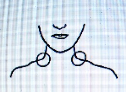

病気の分析について １ 頭脳の病気 （「岡田先生療病術講義録」より）
明主様御講義 「人体の分類」 （昭和11年7月）
「西洋医学では、内科と外科、婦人科、小児科、その他何々と別れますが、便宜上、こちらでは三段に分けます。」

上体の上部
「右の図のごとく三段に分けて、又その一段を三段に分ける。
まず上体の上部から説明致します。即ち脳からであります。
そして医学の方と吾々の方との説明は大変違う事があるかも知れませんが、それは治療に当って自ら会得するより致し方ないのであります。
しかし便宜上、医学の用語や説明を拝借する点もありますが、これは止むを得ないのであります。
大脳は頭蓋骨で包まれ、そして小脳を蓋（おお）うております。
これは上体のあらゆる機関が小脳に集って居るからで、つまり一番の中枢機関たる小脳を保護する為に大脳があるという訳であります。」 （「岡田先生療病術講義録 上巻 ５」より）
明主様御講義 「頭
痛」 （昭和11年7月）
「頭痛には、全体的頭痛と偏頭痛と、前頭部頭痛と後頭部頭痛とがあります。
原因は、毒血に因る場合と脳貧血に因る場合と二通りありますから、毒血の方から先にお話致します。
この症状は、世間非常に多いもので、時々痛む人と慢性的に休みなく痛む人とあります。
原因としては、毒血が上昇して前額部から前頭部両こめかみ等に滞溜し、それの浄化作用が痛みとなるのであります。
まず患者の前述の部へ掌を宛（あ）ててみれば、必ず熱く感ずる。それは毒血のある証拠であります。
それが治療によって冷くなるので、冷くなっただけは痛みが除れたのであります。
次に、脳貧血に因る頭痛は右とは反対であって、頭脳に血液が欠乏して痛むのであります。
これは頸腺付近に水膿溜結し、頭脳への血液送流を妨げられるからであります。
後頭頭痛も、毒血又は貧血いずれかが原因でありますが、それは触査すればよく判るのであります。
本療法に依れば、軽症で二三回、重症で二三週間で全治するのであります。」 （「岡田先生療病術講義録 上巻 ５」より）
明主様御講義 「眩 暈
（めまい）」 （昭和11年7月）
「この症状の原因としては、図のごとく、首の付根の太い筋にゴリゴリがある。

これが頭脳への血液送流を妨げるのであります。
今一つは、前額部全体に毒血が滞溜し、その部に微熱を持つ為であります。
本療法に依れば、軽症一週間位、重症二三ケ月位で全治するのであります。」 （「岡田先生療病術講義録 上巻 ５」より）
明主様御講義 「不眠症」 （昭和11年7月）
「この病気は、後頭部の左右に頗（すこぶ）る頑固な水膿溜結が出来るので、まるで竹筒のようであります。
普通治り難いとされてありますが、本療法に依れば順調に全治するので、軽症で一週間位、重症一ケ月位であります。
この病気の慢性症は睡眠剤中毒に因る事が多いのでありますから、全治させるには薬剤を服用しては駄目であります。」 （「岡田先生療病術講義録 上巻 ５」より）
明主様御講義 「精神病」 （昭和11年7月）
「この病気の原因は、最初は不眠症からであります。
不眠症はまず精神病の一歩手前と言ってもいいのであります。
従って、後頭部の水膿溜結を溶解すれば眠れる様になりますから、眠れさえすれば精神病は治ってゆくので、吾々の方では精神病は必ず全治するのであります。
不眠症から精神病へ進む順序を述べてみましょう。
不眠の原因である後部頸椎部の水膿溜結が脳への送血を妨げるので、脳の中枢が貧血するのであります。
その貧血へ邪霊が憑依するのが、その原因であるのと、今一つは憑依でなく、患者自身の腹中に常に潜在して居た邪霊が、頭脳の貧血に乗じ上昇して頭脳中枢を占領するのであります。
元来人間の精霊は、平常はある程度の濃度を保っている。
その程度とは、普通人の健康状態の血液の密度と同一であります。
しかるに何らかの原因によって、血液が減少した場合、そのごとく精霊も稀薄になるので、その霊の稀薄に乗ずれば、他の霊即ち邪霊が憑依し得らるるのであります。
一種の補給的意味ともなります。
この例として、産後に不眠症や精神病が起り易く、又、月経時にヒステリーが起り易く、又、山に行って断食等を行う場合天狗等が憑依するのは、皆貧血に因る精霊の稀薄に乗ぜらるるのであります。
右のごとき体的原因以外、精神的衝動を受けるにおいて、いよいよ不眠症に拍車をかけられるのであります。
それは貧血が一層はなはだしくなるのでそれだけ邪霊の力が増す事になります。
邪霊が憑依するや、あらゆる事象を連続的に無制限に想わせる。
それは彼らの本能であります。
そうして邪霊の思念がついに発展して、行動にまで及ぶので、それが常軌を逸しさせる種々の狂態であります。
医学上でいう幻聴とは、霊のいう事が聞えるのであり、幻覚というのは種々の霊が見えるのであります。
そうして邪霊というのはほとんど狐の霊で、稀には狸の霊もあり、なお稀には両方の場合もあります。
精神病者が自問自答するのは頭脳の中枢に蟠居（ばんきょ）している狐霊と外部に居る狐霊との問答であるが、この場合本人の記憶を利用する事が多いのであります。
又 空間をみつめて驚いたり泣いたり笑ったりするのは霊が見えるからであります。
要するに精神病なるものは、人間が狐霊に踊らされるのであります。
本療法によれば、半ケ年ないし二ケ年位で完全に治癒するのであります。
世間、脳梅毒が原因とされておりますが、これは極一部であって、
ほとんどが右の原因である事は、吾々の永年の経験によって証明し得らるるのであります。
一例として、前に私が使っていた職人で、それは一人者ですが、ある時相談をかけられた。
彼いわく、「自分は最近・・・人から少し気がおかしいと言われるが、自分ではそうは思わない。
どこか変な所があるんでしょうか」と言うのです。
そこで「自分で変だと思う事はないか」と訊くと
「少しはあります。それは夜遅くなって戸を締めて寝ていると（その職人は二階を借りている）往来を四、五人の人が通ると思うといろんな話をしている。
耳をすますと「今晩、あの石川（その職人の姓）を叩き殺してやろう』などと相談するのが聞えて来るので驚いて飛出す」というのです。
私は「戸を締めてから外を歩く者の言う事がはっきり聞えるというのはおかしいじゃないか」と言うと
「しかし、とてもはっきり聞えます。又よく飯など食おうとすると『その中には毒が入ってるから食うと死ぬぞ」という声が聞える。
それで恐ろしくなって飛出し、今度は蕎麦屋へ入り蕎麦を食おうとすると又そういう声が聞える。
「その蕎麦にはモルヒネが入ってるぞ』などと威（おど）され、又他の家へ行くという様な訳である」と言うのです。
そこで私は「誰がそんな事を喋舌（しゃべ）るか判るか」と言うと
「それは判りません」という。そこで「それは危い。それは狐がそんな事を言って騙すのだから決して信じてはいけない。
今度そういう声が聞えたら・・・必ず狐だと思え「狐が又騙すのだな」と思えばいい」と教えたのであります。
その結果、彼の警戒心が湧起して来たので、段々と快くなり、ついに全治したのであります。
これは私の話だけで治った実例で、未だ軽症の内だから宜かったのであります。
そうして狐は「本体」を暴露されると、騙す興味が無くなるのであります。
よく狂人が、誰も居ないのに喋舌ったり、何もないのに吃驚（びっくり）して逃げる事などがありますが、
それはその人の霊を占領し、他の狐霊と呼応して騙すのであります。
人間の霊を段々占領すると、顔までが狐のようになって来る事もあります。
人間を巧く騙す程、狐の社会では名誉になるのであります。
狐には、稲荷と野狐（やこ）との二種あって、稲荷は祀られた狐であり、野狐はいわばルンペンであります。
この野狐は絶えず祀られたくて策動しているのであります。
日蓮宗の行者は、行を積むと狐が見える様になり、狐と交通する事が出来る。
そうして野狐を招んでは、あの病気をお前が治したら稲荷に祀ってやると言うと、狐は祀ってもらいたさに一生懸命に治すのですから、病気が治ると必ず祀らされるのであります。
野狐でも稲荷でも非常に沢山居て騙すのが巧（うま）い程出世をするんであります。
狐にも種々名前がある。日蓮宗の行者などはよく名前を付けます。
眷族というものも沢山居る。
穴守（あなもり）稲荷などは何万と居る。
これは多く花柳界を専門にやっております。
旦那を招ぶとか色男を招ぶなど巧いものであります。
狐の偉い奴程騙すのが巧妙であります。
東京では穴守と王子、関西では伏見などでありますが、穴守の方は花柳界へ、王子の方は一般的の方面に活動して居ります。
豊川あたりの狐は生活に困らないので、割合悪い事は少い。
豊川の狐は金儲けが専門であるから、豊川稲荷の信者は、金は儲かるが・・・病気や外の不幸が多いのは事実であります。
又 南無妙法蓮華経を聞く程神通力が増すのだと、狐からよく聞いた事がありますが、御題目を唱えると狐が沢山集って来るのは事実であります。
それらの為に、日蓮宗にはどうしても狐憑きが多く犯人が多いのであります。
又 狸は始末がわるく治りがわるい。
これは一見して違うので、狸の方はとぼけた滑稽味があり、超越している所があり、非常に笑いたがるのであります。
狐は人間の頭脳を占領して踊らし面白がっているだけであります。
又 人間の生命を奪る事が好きで、実に簡単に自殺させる。
そして、一人でも余計に殺せば名誉になり、仲間から偉いとされるのであります。
人間一人殺す位は訳ない事で、汽車往生や三原山へ飛込ませたりするのも多くはそれであります。
又 人間の思って居る事を容易に知るので、行者などがよく物を言いあてますが、あれは行者に使われてる狐が先方へ憑るのです。
すると狐は速くにその人の気持や記憶が判るのです。
それを今度は行者に憑って知らせる。行者はその通り言うからあたるという訳なんであります。
ですから過去は判るけれども未来は全然判らぬ。
行者など随分物を当てるくせに下らない生活をしているのは、未来が判らぬからであります。
よく手を上げたり、首を振ったり、異常な恰好するのはほとんど狐霊又は鳥霊の憑依であります。
そして「吾こそは八幡大菩薩だ」の、「何々大明神」とか、ふるったのになると「天之御中主大神」だの「天照大神」など言いますが、あれらは皆、狐、天狗等が好い加減な事を言って騙すのであります。
本人は自分で自分を買被り、自分が天照大神だの、天之御中主大神だのと思込んでしまうので実に危険であるから、神憑りは行らない方がいいのであります。
五、六年前私は某精神病院へ行った事がありますが、そこの医師の話に「病院では全然治らぬ。一旦は治った様でも、家へ帰るとまた起るのです」との事でした。
本療法は霊的療法でありますから、段々狐霊が畏縮する。
そうして狐霊は平常腹部の中央に小さくなって居ります。
よく治療していると臍の辺にムクムクして脈打つものがありますが、それが狐霊であります。
蛇の霊は、長くなったり短くなったりして移動するのが特徴であります。
又、ヒステリーは、精神に衝撃を受けた瞬間精霊が畏縮する。
その間隙に乗じて腹部に潜居していた狐霊が俄然上昇し、頭脳を占有して人間を踊らすのであります。
その場合・・・玉の様なものが腹から昇ってゆくのを意識する婦人がよくありますが、それであります。
頭脳は人間全体の縮図のようなものですから、頭脳の中心を占領すれば身体全部を支配出来るのであります。
暫くして、本人が平静に還るに従って狐霊は再び元の腹部へ戻るので、意識がはっきりしてくるのであります。
前述の様な訳でありますから、精神病とは連続的ヒステリーであり、ヒステリーとは、一時的精神病とも言えるのであります。
女ばかりではなく、男で狐が憑いてる人があります。
そういう人は顔も狐に似ておるものです。
治療をすれば、血が頭へ充実して来るから霊力が増進し、反対に狐霊は畏縮するので、眠れるようになり、意識がはっきりしてくるという順序であります。
狐霊を解剖してみると種々あって、稲荷と野狐と言っても、その中に人間が狐になったのと本来の狐と両方あります。
人間の霊が畜生道に墜ち、狐になってる場合も相当あります。
しかし、人間に憑依する場合、その人の霊統に因縁が必ずあるもので、全然無関係では憑依出来ないものであります。
四、五年前扱ったお婆さんですが、狐が二、三十匹憑いておって、身体の各所に豆粒大になって隠れているのです。
私が指から霊を入れると、「ア、痛い痛い、そう押しちゃ堪らねえ」と言うから、婆さんに「そんなに痛かったか」と訊くと「別に何ともない。アレは狐が言うんです」と言うのです。
狐の匿れ場所のような所を押すと「ア、メッカッタメッカッタ、とうとうメッカッタ、残念々々」という。
「貴様、怪しからん奴だ」と霊を入れると「アッ苦しい、助けてくれー、助けてくれー、もう出ますから勘弁してくれ」と叫ぶのです。
ある日の夕方の事でした。
その婆さんが言うには「先生弱りました、今朝 この婆ア太え奴だから今日は小便を止めてやる」と言われたところ、とうとう今以て小便が出ない」と言うのです。
そこで膀胱の辺を霊圧してやると「降参々々」と言って、直に小便が出た事がありました。」 （「岡田先生療病術講義録 上巻 ５」より）
明主様御講義 「脳溢血」 （昭和11年7月）
「原因は、頸椎から延髄へかけての両側に「毒血」が溜結するんであります。
これは毒血の沢山ある人が、頭脳を多く使うのが原因であります。
近代人は肉食を多くする為毒血が殖える。
そこへ頭脳を多く使うからそれへ向って神経が集注し、それが為毒血が溜結するので、中には癌のように固結した人もありますが、これは脳溢血になり損ねて外で固まったものです。
そうして毒血の溜結がある程度を越えると、血管が破れて脳の方へ溢出する。
それが小脳中の各種の機関に障害を及ぼすので、それの表れが人事不省であり、気の付いた時には中風になっているのであります。

面白い事には、毒血溜血は左右いずれかであるから、病気症状も必ず右か左か一方なのであります。
右が溢出すると左の半身が不随になり、左ですと右半身が不随となります。
中風は医学の解釈では頭脳から繋っている手足への神経が切れると言いますが、これは誤りの様であります。
なぜなれば、本療法によれば治癒するからであります。
ですから、脳溢血を予防するのは容易であって、後頭部へ溜った毒血を浄化すれば絶対に起らないのであります。
予防法は、最初一、二週間治療をして後は一ケ月に二、三回位、半ケ年位続ければまず五年間位は大丈夫であります。
脳溢血の場合は、最初激烈な偏頭痛があります。
そうして発熱と嘔吐があります。
そういう症状は、脳溢血の序幕と見ねばなりません。
嘔吐が頻繁である程、脳は余計に犯されているのであります。
食欲皆無となり、ヌラヌラした唾液を吐きます。
嘔吐の少いのは軽症で、つまり嘔吐の多少によって病気の重軽を知るのが、最も確実であります。
嘔吐が四、五回以上ある時は重症とみていいのであります。
それから人事不省となり、早くて一、二晩、長いのは二週間位意識不明であります。
脳溢血になると同時に左右いずれか一方の手足はブラブラになりますが、脳溢血になった時、直ぐに本療法を行えば十人が十人必ず治るので、手足がブラブラになったのでも大抵二週間位で元通りに恢復するんであります。
脳溢血の徴候は、血圧が高く首筋や肩の凝り、手の先が痺れたり、手が痛かったり、耳鳴、偏頭痛、眩暈等であります。
治療は、頸椎、延髄、小脳部その他熱い所か痛い所、麻痺した個所をやればいいのであります。」 （「岡田先生療病術講義録 上巻 ５」より）
明主様御講義 「脳震盪」 （昭和11年7月）
「よく高所から墜ちたり、転んだりして脳震盪（のうしんとう）を起す事がありますが、脳震盪でも嘔吐さえなければ脳の内部は異常がないので、
もし嘔吐が頻繁にあれば内出血した事になり、生命は覚束ないと見るべきであります。
二、三回の嘔吐ならば内出血が少いので、生命の危険はまあないが、五、六回以上の場合は生命の危険があると見ねばなりません。」 （「岡田先生療病術講義録 上巻 ５」より）
明主様御講義 「嗜眠性脳炎、脳膜炎、脊髄膜炎」 （昭和11年7月）
「嗜眠性脳炎の原因としては、毒血ばかりでなく、膿も混っております。
ですから、脳溢血とは全然違う。
脊柱の頂部から三分の一辺に、大抵の人は多少膿が参出しているもので、その酷いのが脊髄カリエスであります。
脊柱を見ると、そういう人はその個所が窪（くぼ）んでいる。
その部を叩くと痛みがあります。
これはそこから絶えず膿が滲（し）み出て発達しないからであります。」

よく骨が腐るといいますが、腐る事は決してないので、膿が外部へ排泄されようとして骨に細い孔（あな）を沢山穿（あ）けるのであります。
本療法によって膿が溶解消失すれば孔は塞がるのであります。
カリエスの膿は非常に多い人と少い人とあります。
化膿性肋膜炎、化膿性腹膜炎などもこれが原因であります。
又腫物や痔瘻（じろう）などもそうであります。
この原因の又原因としては、人間の祖先の罪穢が霊的に脳の中枢へ流れて来、それが物質化して膿になるのであります。
膿が出てる時は宛（あた）かも上へ出ようか下へ出ようかと考えている様なものであります。
その時頭脳を過度に使用したり、又夏の天日に照らされたりすると上方へ昇ってゆく、すべて膿は神経の集注する個所や、熱した所へ集溜するものであります。
それについて以前私が治療した患者で、眼病で医師から「よく蒸せ」と言われたので、毎日毎日蒸した所、膿が全部眼球へ集中し、真白な膿で眼が塞がったのであります。
これは蒸し過ぎた為に付近の膿が全部眼球へ集溜したので、その猛烈な症状には驚いたのであります。実に物凄い程でありました。
で、膿が上昇して小脳へ入ると非常に眠くなる。これが嗜眠性脳炎であります。
又世間には偶（たま）に、いくら寝ても眠い人がありますが、これは前述と同じ症状で、僅か宛（ずつ）膿が小脳へ入ってゆくのであって、いわば極軽い嗜眠性脳炎であります。
又小脳までゆかずに、その一歩手前で滞溜する場合があります。
これが脊髄膜炎であります。
嗜眠性脳炎によって小脳にまで侵入した膿は、図の様な経路をとって排泄され治癒されるのですから、恢復時は目脂や鼻汁に血液が混入してウンと出るのであります。
この病気で死ぬのは、どういう訳かといいますと、患部を氷冷する為で、その為に膿が排泄され損ねて脳内で固まってしまうからであります。

以前、脳脊髄膜炎を治した事がありますが、十位の男の子で熱がどうしても冷めない。
で、後頭部の中央を触るととても熱い。
そして圧すと痛がる。子供もそこを気にしているので、そこを浄化し始めたら順調に全治したのであります。
これがもっと進んで頭脳の中へ入ると、脳膜炎又は嗜眠性脳炎になる訳で、脳膜炎の方は膿が悪性で、嗜眠性の方の膿は毒血との混合で弱性であります。
脳膜炎など罹りたてに来れば必ず治ります。
以前医師に見放されて一週間も昏睡状態を続けた脳膜炎の五歳の男子の患者を元通りに全治した例があります。」 （「岡田先生療病術講義録 上巻 ５」より）